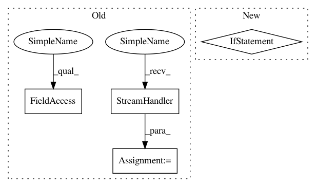

a770dbd27f41d90205bf69d2cd86991d6f887e90,dask_ml/model_selection/_incremental.py,BaseIncrementalSearchCV,fit,#BaseIncrementalSearchCV#Any#Any#,656
Before Change
if self.verbose:
h = logging.StreamHandler(sys.stdout)
context = LoggingContext(logger, level=logging.INFO, handler=h)
else:
context = dummy_context()
After Change
Additional partial fit keyword arguments for the estimator.
client = default_client()
if not client.asynchronous:
return client.sync(self._fit, X, y, **fit_params)
return self._fit(X, y, **fit_params)
@if_delegate_has_method(delegate=("best_estimator_", "estimator"))
def decision_function(self, X):
In pattern: SUPERPATTERN
Frequency: 3
Non-data size: 4
Instances
Project Name: dask/dask-ml
Commit Name: a770dbd27f41d90205bf69d2cd86991d6f887e90
Time: 2020-05-28
Author: stsievert@users.noreply.github.com
File Name: dask_ml/model_selection/_incremental.py
Class Name: BaseIncrementalSearchCV
Method Name: fit
Project Name: automl/HPOlib2
Commit Name: e52f05712b15fa8f47f8951d39722f07a197d125
Time: 2020-08-10
Author: muller-phil@gmx.net
File Name: hpolib/container/client_abstract_benchmark.py
Class Name:
Method Name:
Project Name: dask/dask-ml
Commit Name: a770dbd27f41d90205bf69d2cd86991d6f887e90
Time: 2020-05-28
Author: stsievert@users.noreply.github.com
File Name: dask_ml/model_selection/_incremental.py
Class Name: BaseIncrementalSearchCV
Method Name: fit
Project Name: Qiskit/qiskit-aqua
Commit Name: 23e13f3213f6ffc0146ede1b6e448632eafa7919
Time: 2019-02-02
Author: simone.perriello@protonmail.com
File Name: test/test_mc_mt_gate.py
Class Name:
Method Name: